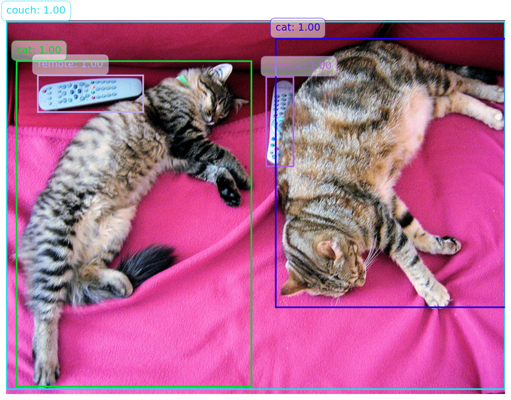

# Use a pipeline as a high-level helperfrom transformers import pipelineobject_detector = pipeline("object-detection", model="facebook/detr-resnet-50", device=device)detection_results = object_detector(image)pprint(detection_results)
模型使用“二部匹配损失”进行训练：将预测的 N=100 个对象查询中的每个类别的预测框与 ground truth 注释进行比较，填充到相同的长度 N（如果一张图片只包含 4 个对象，那么 96 个注释将只是“无对象”作为类别，“无框”作为框）。匈牙利匹配算法用于在每个 N 查询和每个 N 注释之间创建最优的一对一映射。接下来，使用标准交叉熵（对于类别）以及 L1 和通用 IoU 损失的线性组合（对于框）来优化模型参数。
下面是使用第一种调用方式调用 DETR 模型时结果的处理示例。
import matplotlib.pyplot as pltfrom PIL import Imageimport numpy as npimport matplotlib.patches as patchesdef random_color():"""Generate a random color."""return np.random.rand(3,)# Create a figure and axis for plottingfig, ax = plt.subplots(1, 1, figsize=(12, 8))# Display the original imageax.imshow(image)# Overlay bounding boxes and labels with random colorsfor result in detection_results: score = result['score'] label = result['label'] box = result['box']# Generate a random color color = random_color()# Draw bounding box rect = patches.Rectangle( (box['xmin'], box['ymin']), box['xmax'] - box['xmin'], box['ymax'] - box['ymin'], linewidth=2, edgecolor=color, facecolor='none' ) ax.add_patch(rect)# Draw label and score with the same color as the rectangle label_text =f"{label}: {score:.2f}" ax.text( box['xmin'], box['ymin'] -10, label_text, color=color, fontsize=12, bbox=dict(facecolor='white', alpha=0.5, edgecolor=color, boxstyle='round,pad=0.5') )# Hide axisplt.axis('off')# Show the plot with bounding boxes and labelsplt.show()

下面是对第二种调用方式结果处理的方法。
# prepare image for the modelinputs = image_processor(images=image, return_tensors="pt")# forward passoutputs = model(**inputs)# convert outputs (bounding boxes and class logits) to COCO API# let's only keep detections with score > 0.9target_sizes = torch.tensor([image.size[::-1]])results = image_processor.post_process_object_detection( outputs, target_sizes=target_sizes, threshold=0.9)[0]for score, label, box inzip(results["scores"], results["labels"], results["boxes"]): box = [round(i, 2) for i in box.tolist()]print(f"Detected {model.config.id2label[label.item()]} with confidence "f"{round(score.item(), 3)} at location {box}" )
Detected remote with confidence 0.998 at location [40.16, 70.81, 175.55, 117.98]
Detected remote with confidence 0.996 at location [333.24, 72.55, 368.33, 187.66]
Detected couch with confidence 0.995 at location [-0.02, 1.15, 639.73, 473.76]
Detected cat with confidence 0.999 at location [13.24, 52.05, 314.02, 470.93]
Detected cat with confidence 0.999 at location [345.4, 23.85, 640.37, 368.72]